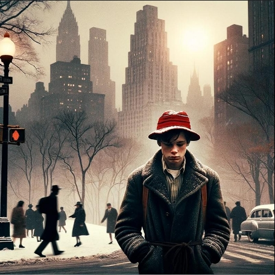

Plot Overview
- Exposition
Holden Caulfield is a troubled teenage boy who has a tendency to get expelled from schools. He feels as though everyone around him are phonies, and he uses these feelings to hide his emotional pain by being critical of the world around him. Set in New York City in the 1950s, this novel explores Holden’s character as he grapples with feelings of alienation and the challenge of being young. J.D. Salinger explores themes of innocence and phoniness by utilizing vivid imagery, symbolism, and a mentally unstable narrator.
- Inciting Incident
Holden gets expelled from Pencey Prep, the boarding school he attends, due to failing all his classes except English. This incident kicks off Holden’s journey through New York City.
- Rising Action
After getting expelled from Pencey Prep Holden takes a train back to his family’s house in New York City. On the train he realizes that he is scared to tell his parents that he got expelled so he decides to go to NYC but not to go home until winter break. Holden lives on his own for a few days and tries to get in touch with some of his friends back home. The main rising action of the story takes place in incidents where Holden attempts to get in touch with other people but his interactions lead to conflict because of how he feels internally. An example of this is when Holden goes on a date with his old friend Sally Hayes, and it ends with them yelling at each other because of Holden’s interesting views of the world and how life should be.
- Climax
Holden calls his little sister, Phoebe, out of school because he decides that it would be better for everyone if he were to move out west and not come back. To his surprise, Phoebe shows up with her suitcase and tells Holden that if he’s going to leave, then she’s coming with him. This moment shows that Holden is trying to run away from adulthood and that he wants to avoid his problems by moving away from them. He also references how he wants to become a metaphorical “catcher in the rye”, showing his longing to protect the innocence of children because he believes no one should have to grow up.
- Falling Action
Phoebe helps Holden realize that his relationship with the people who care about him is more important than his desire to escape from his problems and fantasies of starting a new life somewhere. He recognizes the selfishness and impracticality of his plan. He realizes that he cares more about Phoebe than running away from his problems, so he leads her to one of her favorite places, the zoo, to show her that he doesn’t plan on leaving.
- Denouement/Resolution
Holden takes Phoebe to the carousel in Central Park. As he watches Phoebe ride the carousel he feels truly happy. This moment helps Holden appreciate the innocence of childhood and it solidifies his decision to stay in New York. Holden learns that facing challenges with people that are around him is more important than running away from his life. As he watches her, he cries tears of joy, symbolizing his complex emotions and feelings about the future.
